Workflow Overview

Mermaid source
flowchart TD
%% ================= DESIGN PHASE =================
subgraph PHASE0["Design Phase"]
Idea(["Idea<br/>conversational seed"]) --> Triage{"Non-trivial<br/>feature?"}
Triage -->|"no"| Direct["Implement directly<br/>Definition of Done still applies"]
Triage -->|"yes"| BranchFolder["docs/issues/{branch}/<br/>create branch folder"]
BranchFolder --> InterviewTemplate["interview.md<br/>created from template"]
InterviewTemplate --> Grill[/"grill-me interview<br/>resolve design tree"/]
Grill --> Interview["interview.md<br/>settled answers, examples,<br/>rationale, open questions"]
Interview --> DesignDoc["design.md<br/>synthesized from interview.md"]
DesignDoc --> GateD{{"GATE 1<br/>Design approved?"}}
GateD -->|"revise"| Grill
GateD -->|"rejected"| DeleteBranch["Delete branch<br/>nothing downstream touched"]
end
GateD -->|"approved"| Branch
%% ================= BRANCH BOOTSTRAP =================
subgraph PHASE1["Branch Start"]
Branch["tb-{issue}-{name}<br/>feature branch"] --> SpecDraft["spec.md<br/>AC + binary rubric"]
SpecDraft --> SpecInputs["Spec inputs<br/>design.md controls<br/>interview.md supports"]
SpecInputs --> Domain["Pressure-test spec vs codebase<br/>required when codebase exists"]
Domain --> SpecVal{{"GATE 2<br/>Spec validation passes?"}}
SpecVal -->|"gaps found"| SpecDraft
SpecVal -->|"pass"| Plan["plan.md<br/>P steps mapped to rubric"]
Plan --> PlanInputs["Plan inputs<br/>spec.md controls<br/>design.md + interview.md support"]
PlanInputs --> IssuesF["issues.md<br/>task breakdown<br/>I IDs map to P steps + R criteria"]
IssuesF --> SyncT["Sync coarse issues → Tree<br/>(title + description blocks)"]
SyncT --> TrackerF["tracker.md — all criteria NOT YET"]
TrackerF --> DevLogs["scratchpad.md + decisions.md<br/>development decision logging"]
end
DevLogs --> Work
%% ================= IMPLEMENTATION LOOP =================
subgraph PHASE2["Implementation Loop"]
Work["Implement issue + tests<br/>(test-first for qualifying bugs)"] --> Scratch["scratchpad.md<br/>decision logging on triggers"]
Scratch --> AmendQ{"New requirement<br/>outside spec?"}
AmendQ -->|"yes"| Amend["spec.md Changes entry<br/>new AC + rubric<br/>tracker adds NOT YET at boundary"]
Amend --> Work
AmendQ -->|"no"| PRQ{"Natural PR<br/>boundary?"}
PRQ -->|"keep working"| Work
end
PRQ -->|"yes"| Recon
%% ================= PR BOUNDARY PIPELINE =================
subgraph PHASE3["PR Boundary"]
Recon["Update tracker.md<br/>+ reconcile issues.md"] --> Matrix["Per-PR verification matrix<br/>build, lint, unit, integration,<br/>E2E/smoke, runtime"]
Matrix --> DoD{{"GATE 3<br/>Definition of Done passes?"}}
DoD -->|"fail"| Work
DoD -->|"pass"| Eval["Scoped spec-evaluate<br/>tracker updated from evidence only"]
Eval --> Judge{{"GATE 4<br/>Independent judge passes?"}}
Judge -->|"FAIL"| Work
Judge -->|"explicit user waiver"| RevPR["PR/code review<br/>findings lead with file/line refs"]
Judge -->|"pass"| RevPR
RevPR --> Explain["explain-diff<br/>reviewer-facing walkthrough"]
Explain --> TriGate{{"GATE 5<br/>Decision triage clean?"}}
TriGate -->|"unreviewed [ ]"| Scratch
TriGate -->|"clean"| OpenPR["Open or update PR<br/>summary, decisions, verification,<br/>judge, review, explain-diff,<br/>known failures"]
OpenPR --> Human{{"GATE 6<br/>Human review"}}
Human -->|"changes requested<br/>issues → in-progress"| Work
end
Human -->|"merged — issues → closed"| AllPass{"All rubric<br/>criteria PASS?"}
AllPass -->|"NOT YETs remain"| Work
%% ================= FEATURE COMPLETION =================
AllPass -->|"yes"| FullEval
subgraph PHASE4["Feature Completion"]
FullEval["Full verification<br/>against complete spec"] --> FinalTracker{{"GATE 7<br/>zero NOT YET<br/>zero FAIL"}}
FinalTracker -->|"fail"| Work
FinalTracker -->|"pass"| FullJudge{{"GATE 8<br/>Independent judge passes?"}}
FullJudge -->|"FAIL"| Work
FullJudge -->|"pass / waived"| Report["Completion Report<br/>DoD + AC + rubric tables"]
Report --> Closeout["Feature close-out<br/>final PR record, Tree complete,<br/>branch folder retired, checkpoint"]
end
Closeout --> Done(["Done<br/>issues.md frozen as permanent task log"])
Direct --> Done
%% ================= AMBIENT PRIMITIVES =================
subgraph AMBIENT["Context Primitives (ambient — not pipeline steps)"]
CP[("checkpoint: at will · auto near<br/>context limit · at every gate pass")]
HO[/"handoff: on any agent switch<br/>mini-grill: recipient + objective"/]
end
subgraph VALIDATORS["Validator-backed Gates"]
VDocs["validate_branch_docs.py"]
VSpec["lint_spec.py"]
VIssues["lint_issues.py"]
VTriage["gate_triage.py"]
VTracker["lint_tracker.py<br/>--final at completion"]
end
CP -.-> GateD
CP -.-> DoD
CP -.-> FullJudge
HO -.-> Work
VDocs -.-> BranchFolder
VSpec -.-> SpecVal
VIssues -.-> IssuesF
VTriage -.-> TriGate
VTracker -.-> TrackerF
VTracker -.-> FinalTracker
%% ================= STYLES =================
classDef gate fill:#fde68a,stroke:#b45309,stroke-width:2px,color:#111;
classDef artifact fill:#bfdbfe,stroke:#1e40af,color:#111;
classDef prim fill:#e9d5ff,stroke:#6b21a8,color:#111;
classDef cross fill:#fecaca,stroke:#991b1b,color:#111,stroke-dasharray: 5 5;
classDef phase fill:#d1fae5,stroke:#047857,color:#111;
classDef sync fill:#fed7aa,stroke:#c2410c,color:#111;
classDef validator fill:#e5e7eb,stroke:#374151,color:#111,stroke-dasharray: 3 3;
class Triage,GateD,SpecVal,DoD,Judge,TriGate,Human,AllPass,FinalTracker,FullJudge gate;
class BranchFolder,InterviewTemplate,Interview,DesignDoc,SpecDraft,Plan,IssuesF,TrackerF,Scratch,DevLogs,Amend,Report,Closeout artifact;
class CP prim;
class HO cross;
class Grill,Domain,Eval,RevPR,FullEval,SpecInputs,PlanInputs,Matrix phase;
class SyncT sync;
class VDocs,VSpec,VIssues,VTriage,VTracker validator;